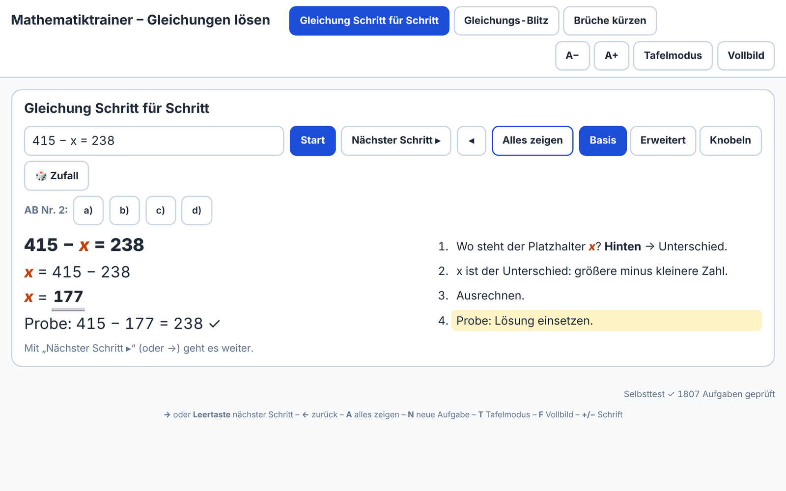
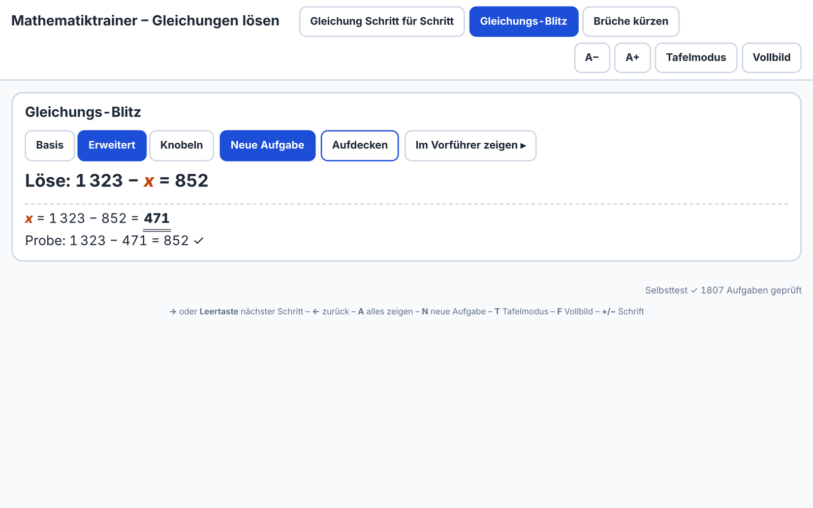
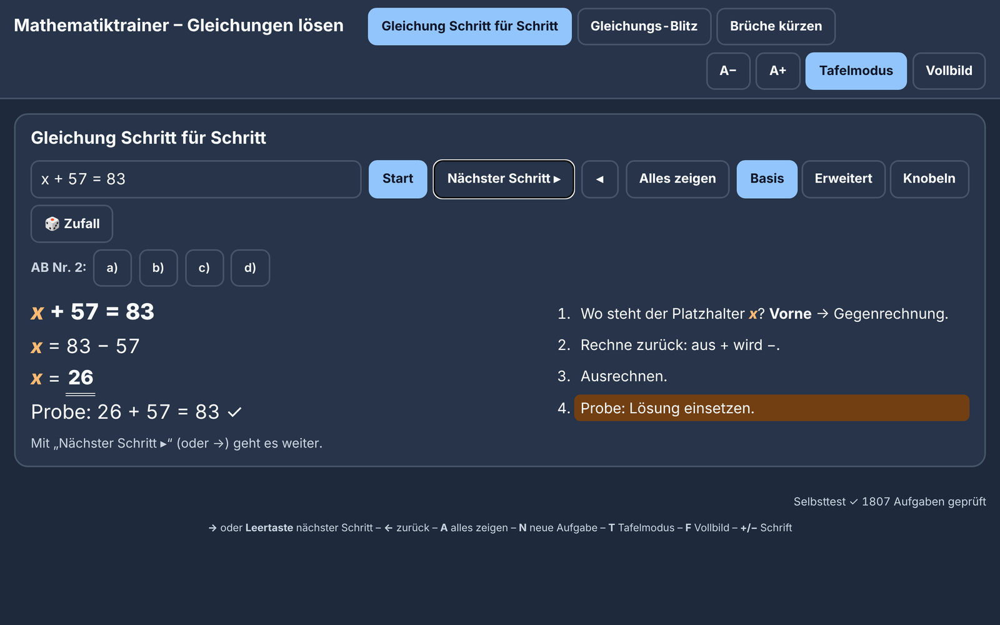
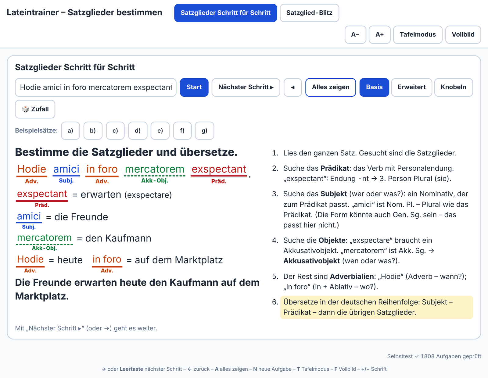
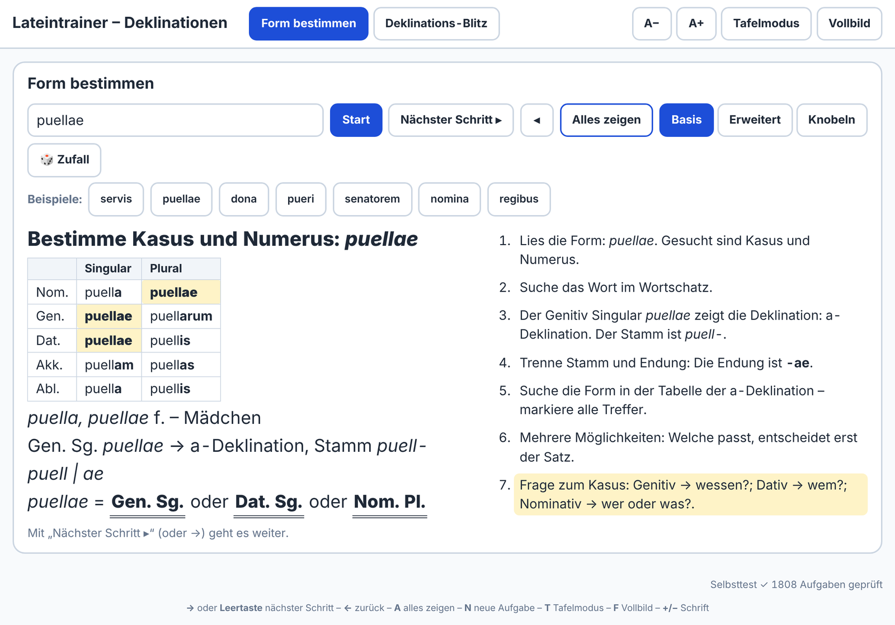
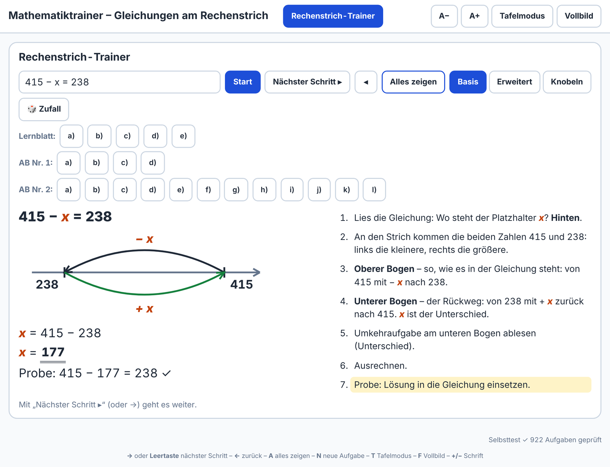
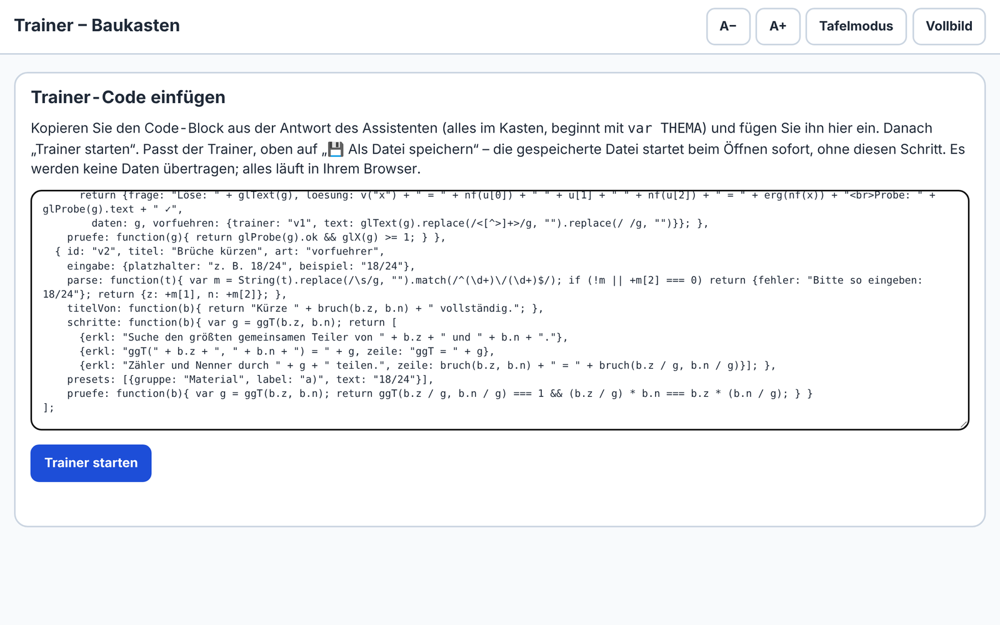

Werkzeug für den Unterricht · Mathematik, Latein und mehr
Der Trainer: Lösungswege Schritt für Schritt selbst kontrollieren
Aus einem Arbeitsblatt wird in wenigen Minuten ein interaktiver Trainer. Die Kinder üben damit im eigenen Tempo und vergleichen ihren Weg Zeile für Zeile mit einer sauber notierten Lösung – nicht nur das Endergebnis. Entstanden ist er im Mathematikunterricht; er funktioniert überall, wo es Verfahren mit festen Schritten gibt, etwa beim Bestimmen lateinischer Formen und Satzglieder. Den Code schreibt ein KI-Assistent in Fobizz, ein Baukasten im Browser macht daraus eine Datei für iPad und Tafel.
Zu jedem Kapitel meiner fünften Klasse baue ich inzwischen ein interaktives Tafelbild: Lernblatt mit Klick-Lücken, Arbeitsblatt zum Verbessern, und ein Reiter, den ich „Trainer“ nenne. An der Tafel hilft er beim gemeinsamen Verbessern. Seinen größten Wert hat er aber, wenn die Kinder selbst damit arbeiten: Jedes Kind rechnet in seinem Tempo und kontrolliert danach seinen Rechenweg Schritt für Schritt.
Denn das Endergebnis schaffen viele Kinder. Was oft nicht gelingt, ist die Struktur: welche Zeile als Nächstes kommt, wo das Gleichheitszeichen steht, wie die Probe notiert wird. Ein Lösungsstreifen mit „x = 177“ zeigt das nicht. Der Trainer zeigt den Weg so, wie er ins Heft gehört, und das Kind prüft nach jeder Zeile, ob es bei ihm genauso dasteht. Wer sicher ist, holt sich die nächste Aufgabe. Und ich habe Zeit für die zwei Kinder pro Klasse, die größere Schwierigkeiten haben, und kann bei ihnen länger bleiben.
Diesen Teil gibt es jetzt für alle Lehrkräfte – unabhängig von Schule und Lehrwerk. Ein Assistent in Fobizz liest Ihr eigenes Material, entscheidet, welche Aufgaben sich für einen Trainer lohnen, und schreibt dafür einen kurzen Code-Block. Den fügen Sie in den Baukasten ein, eine Seite im Browser, und speichern das Ergebnis als eigene Datei. Kein Programmieren, nichts zu installieren, keine Schülerdaten.
Angefangen hat das als „Mathematiktrainer“. Beim Ausprobieren zeigte sich: Derselbe Baukasten führt genauso vor, wie man eine lateinische Form bestimmt oder einen Satz in Satzglieder zerlegt. Deshalb heißt er jetzt einfach Trainer. Mathematik-Code, den Sie mit dem alten Assistenten erstellt haben, läuft unverändert weiter.
Der größte Mehrwert: Kontrolle in jedem Schritt, im eigenen Tempo
So läuft eine Übungsphase mit dem Trainer – auf dem iPad oder jedem anderen Gerät mit Browser:
- Erst selbst lösen. Das Kind löst die Aufgabe vollständig im Heft, mit allen Zeilen.
- Dann Schritt für Schritt aufdecken. Es tippt die Aufgabe im Trainer an – den Knopf des Arbeitsblatts oder „🎲 Zufall“ – und deckt mit „Nächster Schritt“ eine Zeile nach der anderen auf.
- Nach jeder Zeile vergleichen. Stimmt der Aufbau? Steht dieselbe Umformung da, in derselben Schreibweise, das Gleichheitszeichen am richtigen Platz – oder in Latein: dasselbe Satzglied, dieselbe Bestimmung? Ein richtiges Ergebnis auf einem ungeordneten Weg ist noch nicht fertig.
- An der ersten Abweichung ansetzen. Neben der Zeile steht die Erklärung des Schritts in Schülersprache. Das Kind verbessert seine Zeile und rechnet von dort aus weiter.
- Weiter im passenden Niveau. Wer sicher ist, holt sich mit „🎲 Zufall“ eine neue Aufgabe oder wechselt in die nächste Stufe; wer noch unsicher ist, bleibt bei „Basis“.
Die Schnellen warten nicht auf die anderen, und wer mehr Zeit braucht, wird nicht mitgezogen. Wer allein zurechtkommt, kontrolliert sich selbst. Sie gewinnen Zeit für die wenigen Kinder, bei denen das nicht reicht, und können sich ihnen länger widmen, ohne dass der Rest der Klasse stillsteht.
Hilfreich ist eine feste Regel: erst lösen, dann aufdecken – und beim Üben Schritt für Schritt statt „Alles zeigen“. Der Trainer liest nicht mit, was im Heft steht. Den Vergleich macht das Kind selbst, und genau dabei schaut es auf die Form seines Lösungswegs.
Was der Trainer kann
Ein Trainer besteht aus bis zu drei Reitern. Jeder Reiter ist einer von zwei Bausteinen.
Der Vorführer zeigt einen Lösungsweg so, wie er ins Heft kommt: links die Rechnung, Zeile für Zeile, rechts die Erklärung in Schülersprache. „Nächster Schritt“ (oder die Pfeiltaste) deckt die nächste Zeile mit ihrer Erklärung auf, „◂“ geht zurück – so lässt sich der eigene Weg Zeile für Zeile danebenlegen. Die Aufgaben Ihres Blatts stehen als Knöpfe darunter, beschriftet wie im Material – „AB Nr. 2: a) b) c) d)“. Ein Tippen genügt, im Heft wie an der Tafel. Jede andere Aufgabe lässt sich eintippen, und „🎲 Zufall“ erzeugt eine neue in der gewählten Stufe.

Der Blitz stellt Aufgaben in drei Stufen – Basis, Erweitert, Knobeln – und deckt die Lösung auf Knopfdruck auf – zum schnellen Üben im eigenen Tempo. „Im Vorführer zeigen“ übergibt eine Blitz-Aufgabe an den Vorführer, wenn ein Kind oder die Klasse den ganzen Weg sehen will.

Dazu kommt eine Kopfleiste wie bei einem Tafelbild: Schrift größer und kleiner, Vollbild und ein Tafelmodus mit dunklem Hintergrund und hohem Kontrast für helle Räume und schwache Beamer. Die Knöpfe sind groß genug für Finger auf dem iPad, und alles lässt sich auch mit der Tastatur bedienen – praktisch am Smartboard mit einer Funktastatur in der Hand.

Beispiel ausprobieren Baukasten öffnen
Nicht nur Mathematik: ein Probelauf für Latein
Ein Trainer lohnt sich überall, wo es ein Verfahren mit festen Schritten gibt. In Latein ist das zum Beispiel die Satzanalyse vor dem Übersetzen: zuerst das Prädikat über die Personalendung, dann das Subjekt – ein Nominativ, der zum Prädikat passt, oder es steckt in der Endung –, dann die Objekte nach ihrem Kasus, der Rest sind Adverbialien. Erst dann wird übersetzt. Der Vorführer markiert mit jedem Schritt ein Satzglied mehr, farbig und mit Etikett, und zeigt am Ende die Übersetzung in deutscher Reihenfolge.

Beim Bestimmen von Formen geht der Trainer wie im Heft vor: Wort im Wortschatz suchen, am Genitiv die Deklination erkennen, Stamm und Endung trennen, alle Treffer in der Tabelle markieren. Mehrdeutigkeit wird gezeigt, nicht verschwiegen – puellae ist Genitiv Singular, Dativ Singular oder Nominativ Plural; welche Form passt, entscheidet erst der Satz.

Beide Latein-Trainer arbeiten mit einem kleinen, eigenen Grundwortschatz und sind ein Probelauf – Begriffe und Markierungen sollten Lateinlehrkräfte an den eigenen Unterricht anpassen. Genau das geht über den Assistenten: Wortliste und Begriffe mitgeben, fertig. Diese Fächer und Themen passen:
| Fach | geeignet, zum Beispiel |
|---|---|
| Mathematik | Gleichungen, Terme, Text → Term, schriftliches Rechnen, Brüche, Primfaktoren, Einheiten |
| Latein (erprobt) | Formen bestimmen und bilden, Satzglieder bestimmen |
| andere Sprachen | Formen nach Regel bilden (Zeitformen, Steigerung), Formen bestimmen |
| Naturwissenschaften | Formeln umstellen, Einheiten umrechnen |
Ein Hinweis aus dem Probelauf: Sprach-Trainer brauchen mehr Daten als Mathe-Trainer – Wortliste, Endungstabellen, Musterformen. Bitten Sie den Assistenten deshalb um einen Trainer pro Antwort und geben Sie eine kurze Wortliste mit (10 bis 20 Wörter).
Beispiele zum Ausprobieren
Alle Beispiele sind mit dem Baukasten gebaut, laufen im Browser und lassen sich herunterladen und weitergeben. Die fünf Mathematik-Trainer stammen aus meinen Tafelbildern der fünften Klasse.
Mathematik
Gleichungen lösenVorführer, Blitz und Brüche kürzenMathematik
Gleichungen am RechenstrichBögen bauen sich Schritt für Schritt aufMathematik
Gleichungs-Blitz2- bis 4-stellig, mit Platzhalter □Mathematik
Text-Term-ZerlegerVerb, Signalwort, Klammern – vom Text zum TermMathematik
Satzbaukastenvom Term zum TextMathematik
PrimfaktorzerlegungFaktorbaum wächst Schritt für Schritt, mit PotenzschreibweiseLatein
Satzglieder bestimmenPrädikat, Subjekt, Objekte, Adverbialien, ÜbersetzungLatein
DeklinationenFormen bestimmen und bilden, a-, o- und 3. Deklination

Was er bewusst nicht kann
- Kein Arbeitsblatt, kein Lernblatt. Der Assistent baut Ihr Material nicht nach. Er nimmt nur die Aufgaben, bei denen ein Trainer etwas kann, was Papier und Tafel nicht können: ein Verfahren an beliebig vielen Aufgaben vorführen, eine Aufgabe per Knopf aufrollen, neue Aufgaben in Sekunden.
- Keine offenen Aufgaben. Begründen, Beschreiben, Konstruieren mit Zirkel und Geodreieck, Sachaufgaben mit eigenem Kontext, freies Schreiben und das Übersetzen ganzer Texte setzt er nicht um. Im Plan sagt er kurz, warum. Hat das ganze Material keinen passenden Teil, sagt er auch das.
- Keine Auswertung, keine Schülerdaten. Der Trainer ist ein Werkzeug zum selbstständigen Üben und für die Tafel. Er liest nicht mit, was die Kinder schreiben, bewertet nichts, sammelt nichts und schickt nichts weg.
- Kein Ersatz für Ihren Blick. Die Lösungen prüft der Trainer selbst (siehe unten). Ob die Erklärschritte so klingen, wie Sie es im Unterricht sagen, sehen Sie beim einmaligen Durchklicken.
Was Sie brauchen
Einen Fobizz-Zugang (Schul- oder Einzellizenz), mit dem Sie angemeldet sind; der Remix-Knopf erscheint nur im angemeldeten Zustand. Ihr eigenes Material als PDF, Foto oder Text – Arbeitsblatt, Hefteintrag, eigene Aufgaben oder eine Wortliste. Und einen Browser: Der Baukasten läuft online unter dieser Adresse oder als Datei aus dem Material-Paket, auch am iPad in Safari. Für die Übungsphase brauchen die Kinder ein Gerät mit Browser, etwa ein Schul-iPad; die Trainer-Datei kommt per Lernplattform, AirDrop oder geteiltem Ordner dorthin.
Einen Trainer erstellen
Den Remix machen Sie einmal. Danach braucht jeder neue Trainer etwa fünf Minuten, das meiste davon ist Durchklicken.
-
1
Den Assistenten übernehmen
Fobizz · Remix · einmalig, 2 MinutenÖffnen Sie – angemeldet in Fobizz – die Vorlage „Trainer“ und klicken Sie oben rechts auf „Remix“. Die Kopie mit Instruktionen, dem Skill „trainer“, drei Wissensdateien (Schnittstelle, Beispiel Mathematik, Beispiel Latein), Chatstartern und Bild liegt danach in Ihrer Ablage. Prüfen Sie dort das Sprachmodell: Claude Sonnet 5.5. Wenn Fobizz „erweitertes Denken“ anbietet, lassen Sie es aus.
Ergebnis: ein eigener Assistent „Trainer“ in Ihrer Ablage. Haben Sie schon den „Mathematiktrainer“ übernommen, machen Sie den Remix neu – die alte Kopie bleibt bei Mathematik. Ohne Fobizz geht es auch: Das Material-Paket enthält alle Teile zum Selbst-Anlegen, auch für ein Claude-Projekt.
-
2
Material geben
Fobizz · Assistent · 1 MinuteLaden Sie Ihr eigenes Material hoch – Arbeitsblatt, Hefteintrag oder Wortliste, keine Buchseiten – und schreiben Sie: „Daraus bitte den Trainer.“ Der Assistent antwortet in drei Teilen. Zuerst kommt ein Plan mit höchstens fünf Zeilen: welche Aufgaben welcher Trainer werden und welche nicht. Dann der Trainer-Code in einem Kasten. Zum Schluss eine Kontrolltabelle mit den Ergebnissen der Knopf-Aufgaben, die er selbst nachgeprüft hat. Vergleichen Sie die Tabelle kurz mit Ihrem Lösungsblatt.
Ergebnis: ein Code-Block, der mit
var NAMEbeginnt – meist 4 000 bis 7 000 Zeichen. -
3
Code in den Baukasten
Browser · Baukasten · 1 MinuteKopieren Sie den ganzen Kasten (über das Kopier-Symbol am Kasten oder durch Markieren), öffnen Sie den Baukasten, fügen Sie ein und tippen Sie auf „Trainer starten“. Ob die Markdown-Zeichen am Anfang mitkopiert wurden, ist egal; der Baukasten entfernt sie.

Der Baukasten mit eingefügtem Code. Alles läuft in Ihrem Browser; der Code wird nirgendwohin geschickt. -
4
Prüfen und speichern
Browser · 2 MinutenUnten rechts muss stehen: „Selbsttest ✓ … Aufgaben geprüft“. Klicken Sie die Knopf-Aufgaben einmal durch – stimmen die Schritte mit dem überein, was Sie im Unterricht sagen? Dann oben auf „💾 Als Datei speichern“. Die gespeicherte Datei startet beim Öffnen sofort, ohne Baukasten, auch offline. Geben Sie sie den Kindern aufs Tablet – für die Übungsphase im Unterricht und zum Üben zu Hause – und legen Sie sie zu Ihren Tafelbildern.
Ergebnis: eine Datei wie
Mathematiktrainer_Gleichungen_loesen.htmloderLateintrainer_Satzglieder_bestimmen.html(25 bis 100 kB). Erscheint statt des Selbsttests eine Meldung, kopieren Sie sie in den Assistenten – er liefert einen korrigierten Code-Block.
Im Unterricht
Die Bedienung funktioniert mit dem Finger auf dem Tablet ebenso wie am Smartboard. Dort hilft die Tastatur:
| Taste | Wirkung |
|---|---|
| → oder Leertaste | nächster Schritt; im Blitz: aufdecken, dann neue Aufgabe |
| ← | einen Schritt zurück |
| A / N | alles zeigen / neue Zufallsaufgabe |
| 1–4 | Reiter wechseln |
| T / F | Tafelmodus / Vollbild |
| + / − | Schrift größer / kleiner |
Drei Einsätze bieten sich an. In der Übungsphase, dem wichtigsten, arbeitet jedes Kind am eigenen Gerät wie oben beschrieben, und Sie sind frei für die Kinder, die Unterstützung brauchen. Beim Verbessern an der Tafel nennt ein Kind sein Ergebnis, Sie tippen auf die Aufgabe, und die Klasse sagt den nächsten Schritt voraus, bevor Sie ihn aufdecken. Zum Einstieg laufen ein paar Blitz-Aufgaben in der Stufe Basis als kurzes Aufwärmen. Zu Hause übt jedes Kind mit „🎲 Zufall“ so viele Aufgaben, wie es möchte.
Warum keine Fehler durchrutschen
In Lösungen darf kein Fehler sein, auch nicht in Zufallsaufgaben. Deshalb tippt der Assistent keine einzige Lösung ein, sondern schreibt, wie sie berechnet wird. Zu jedem Trainer gehört außerdem eine unabhängige Kontrolle: Bei Gleichungen etwa wird die Lösung zusätzlich eingesetzt, beim Kürzen geprüft, ob der Bruch wirklich vollständig gekürzt ist. Beim Start rechnet der Baukasten alle Knopf-Aufgaben und je Stufe 300 Zufallsaufgaben mit dieser Kontrolle nach. Erst dann erscheint das Häkchen. Die Kontrolltabelle in der Antwort ist eine zweite, unabhängige Rechnung des Assistenten, und Ihr Lösungsblatt die dritte.
In Sprachen gilt dasselbe Prinzip: Formen werden aus Stamm und Endungstabelle gebildet, nie einzeln eingetippt. Die unabhängige Kontrolle sind Musterformen, die für je ein Wort pro Deklination von Hand im Code stehen – stimmt die Tabelle nicht mit ihnen überein, gibt es kein Häkchen. Bei Sätzen liest der Trainer jeden Zufallssatz noch einmal und prüft, ob es genau eine Bestimmung gibt und Subjekt und Prädikat zusammenpassen; mehrdeutige Sätze lässt er weg.
Datenschutz in drei Sätzen
Im Assistenten arbeiten nur Sie, mit Ihrem Material; laden Sie dort nichts mit Namen oder Noten von Kindern hoch. Baukasten und Trainer-Dateien laufen vollständig im Browser, speichern nichts auf einem Server und übertragen keine Daten. Die Kinder brauchen weder Konto noch Anmeldung – sie öffnen eine Datei auf ihrem Gerät oder sehen den Trainer an der Tafel.
Wenn etwas hakt
| Das passiert | Das hilft |
|---|---|
| Die Antwort des Assistenten bricht nach etwa zwei Minuten ab | „Erweitertes Denken“ ausschalten und um höchstens zwei Trainer bitten. Der Assistent liefert nur einen kurzen Code-Block; hängt er trotzdem, ist meist das Material sehr umfangreich – dann nur die Seite mit den passenden Aufgaben hochladen. |
| Der Baukasten meldet „Der Code enthält einen Fehler“ | Meist wurde der Kasten nicht vollständig kopiert. Mit dem Kopier-Symbol erneut kopieren; sonst die Meldung in den Assistenten einfügen. |
| Unten rechts steht „⚠ Selbsttest“ statt des Häkchens | Die Meldung in den Assistenten kopieren. Er korrigiert die betroffene Rechnung und schickt den ganzen Code neu. |
| Ein Erklärschritt ist anders formuliert als in Ihrem Unterricht | Einfach sagen: „Bei Schritt 2 bitte ‚Gegenrechnung‘ statt ‚Umkehrung‘.“ Schreibweisen aus Ihrem Material übernimmt er von sich aus. |
| Ein Sprach-Trainer bricht ab oder wird unvollständig | Um einen Trainer pro Antwort bitten und eine kurze Wortliste (10 bis 20 Wörter) mitgeben. |
| Ich habe noch Code vom „Mathematiktrainer“ | Er läuft im neuen Baukasten unverändert; im Titel steht dann „Trainer“ statt „Mathematiktrainer“. |
| Am iPad passiert beim Speichern nichts Sichtbares | Safari legt die Datei unter „Downloads“ in der Dateien-App ab. Öffnen lässt sie sich von dort oder nach dem Teilen in einen Ordner Ihrer Wahl. |
Material zum Herunterladen
Das Material-Paket enthält alles zum Selbst-Anlegen des Assistenten: Instruktionen, Skill, drei Wissensdateien, Name, Beschreibung und Chatstarter, das Bild, die Anleitung, den Baukasten als Datei für die Offline-Nutzung und zwei Beispiel-Trainer (Mathematik, Latein). Damit lässt sich der Assistent auch ohne Remix nachbauen – in Fobizz, als Claude-Projekt oder in einem anderen Werkzeug, das Instruktionen und Wissensdateien annimmt.
Material-Paket herunterladen (ZIP) Vorlage in Fobizz ↗ Baukasten öffnen Beispiel ausprobieren Quellcode auf GitHub ↗
← Alle Beiträge · Die Lernschleife
Lizenz. Text und Anleitungen unter CC BY-SA 4.0, Code von Baukasten und Beispielen unter MIT, die Fobizz-Vorlage unter CC BY – Andreas Hemmeter. Der Assistent läuft auf Fobizz mit dem dort gewählten Sprachmodell. Erstellt mit Unterstützung von Claude Cowork.